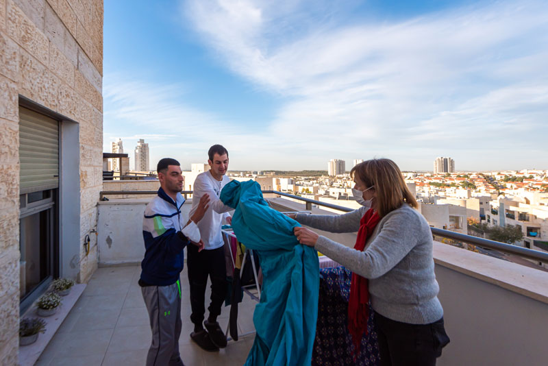
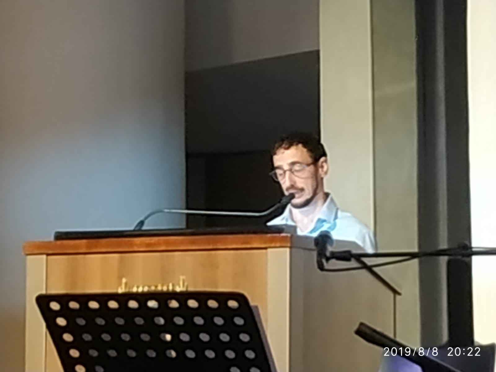

בית וקהילה שיקומית מבית אגודת ניצן — הארגון הגדול בארץ לטיפול בילדים ובבוגרים עם ליקויי למידה
אגודת ניצן (הפועלת כמלכ"ר) היא הארגון הגדול בארץ לטיפול בילדים ובבוגרים עם ליקויי למידה. האגודה הוקמה בשנת 1964 על-ידי הורים ומתנדבים, במטרה לאתר, לאבחן, לטפל ולקדם ילדים, מתבגרים ובוגרים עם ליקויי למידה, הפרעת קשב וקשיי הסתגלות ותפקוד.
מערך דיור ניצן מודיעין הוקם במאי 2012 במטרה לשמש בית וקהילה שיקומית עבור בוגרים צעירים עם ליקויי למידה, קשיי הסתגלות ותפקוד, והוא מעודד את התפתחותם האישית, התעסוקתית והחברתית.
המערך נבנה מתוך אמונה בערך כבוד האדם וזכותו לחיים עם משמעות הכוללת: ייחודיות ושונות, פרטיות ואינטימיות ובחירה עצמאית, תוך שיתוף המשפחה והקהילה בתהליך.
הדיור מושתת על הבנת החשיבות בקידום איכות חיים גבוהה המעודדת מוטיבציה לגדילה והתפתחות. מושם דגש על מינוף יכולותיהם של הדיירים ועידודם לעצמאות, לשליטה מרבית בחייהם, לקבלת החלטות מתוך חופש בחירה, לפיתוח היכולת לסנגור עצמי ולהגשמת שאיפותיהם תוך היענות לצרכים המשתנים לאורך מעגל החיים.
אנו דוגלים במתן מענה אינטגרטיבי תוך התייחסות לכל הרבדים של האדם: הקוגניטיבי, הרגשי וההתנהגותי, על בסיס האמונה שהאדם הינו ישות הוליסטית. על מנת למקסם את מיצוי הפוטנציאל, יש לעבוד על כל אחד מהרבדים הללו באופן שיעניק לו כלים מגוונים להתמודד עם קשייו.
הקניית כישורי חיים לשיפור התפקוד היומיומי, איכות החיים וחיזוק תחושת המסוגלות.
הבניית מסגרת חברתית המאפשרת הזדמנויות להשפעה, מעורבות והעלאת הדימוי העצמי והחברתי.
דיור איכותי בקהילה בתנאים מוגנים, בדגש על מתן כבוד לפרטיות ועל אווירה ביתית נעימה.
הגברת תחושת השליטה של הצעיר בחייו באמצעות מערך שירותים העומד לרשותו, על פי בחירתו.

משימות הבית
דייר המערך מרצה